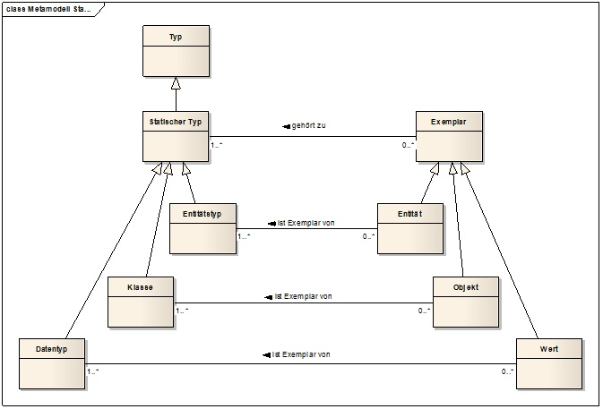
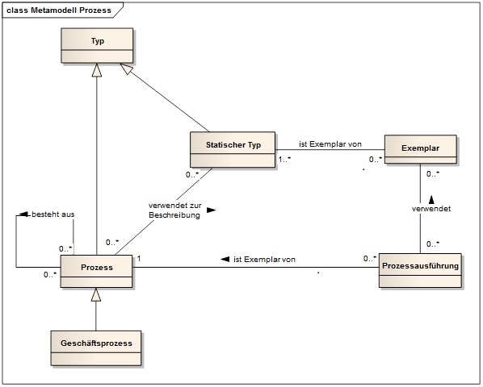

Die folgenden zwei Graphiken sollen wichtige inhaltliche Zusammenhänge einiger ausgewählter Begriffe in Form von sog. Metamodellen visualisieren. Sie sind in der Form bekannter Metamodelle gehalten und dienen einzig und allein der besseren
Orientierung des Lesers. Sie erheben also keine besonderen formalen Ansprüche, insbesondere nicht den auf Vollständigkeit. Die durch Verbindungen dargestellten inhaltlichen Bezüge finden sich in den Definitionen wieder - umgekehrt wurde aber nicht
angestrebt, die in den Definitionen enthaltenen Querbezüge vollständig graphisch darzustellen.
Die beiden Graphiken stellen den Zusammenhang zwischen den sog. "statischen" und "dynamischen" Begriffskategorien dar. Dabei wurde speziell Wert auf die analoge Verwendung des Begriffspaars "Typ" / "Exemplar" (engl.: instance) gelegt. Exemplare von
Prozess"typen" sind die konkret ausgeführten (also i.d.R. zeitlich flüchtigen) Prozesse, die i.d.R. auf einzelne Exemplare der "statischen" Typen zugreifen und im Zusammenhang mit diesen ablaufen.
Die Kategorien "Prozessbestandteil" und "Prozesskategorie" im 2. Diagramm dienen allein der Zusammenfassung jeweils darunter stehender Begriffe - ihnen entsprechen keine expliziten Definitionen in der Begriffssammlung.

